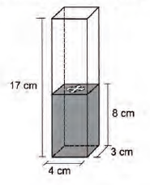

Carl Sagan: "Em algum lugar, alguma coisa incrível está esperando para ser descoberta.”
16- Uma pessoa comprou uma caneca para tomar sopa,conforme ilustração.
Sabe-se que 1 cm3 = 1 mL e que o topo da canecaé uma circunferência de diâmetro (D) medindo 10 cm,e a base é um círculo de diâmetro (d) medindo 8 cm.Além disso, sabe-se que a altura (h) dessa caneca mede12 cm (distância entre o centro das circunferências do topo e da base).
Utilize 3 como aproximação para π.
Qual é a capacidade volumétrica, em mililitro, dessa caneca?
A) 216
B) 408
C) 732
D) 2 196
E) 2 928
a caneca é o tronco de uma base, então aplica a fórmula do volume do tronco da base.
V= π x h/3 (R² + R x r + r²)
V = 3 x 12 /3 (25 + 20 + 16)
V= 12 x 61= 732cm³ que é o mesmo que 732ml.
GABARITO: LETRA C
17- Um povoado com 100 habitantes está passando por uma situação de seca prolongada e os responsáveis pela administração pública local decidem contratar a construção de um reservatório. Ele deverá ter a forma de um cilindro circular reto, cuja base tenha 5 metros de diâmetro interno, e atender à demanda de água da população por um período de exatamente sete dias consecutivos. No oitavo dia, o reservatório vazio é completamente reabastecido por carros-pipa.
Considere que o consumo médio diário por habitante é de 120 litros de água. Use 3 como aproximação para π.
Nas condições apresentadas, o reservatório deverá ser construído com uma altura interna mínima, em metro, igual a:
A) 1,12.
B) 3,10.
C) 4,35.
D) 4,48.
E) 5,60.
1º passo - volume de agua consumido
1 Habitante consome - 120 l/dia
100 habitantes consomem - 12000 l/dia
100 habitantes consomem - 84000 l em 7 dias
Lembre-se - 1 l equivale 1 dm³, 1 mL equivale a 1 mL
2º Volume do cilindro = PiR²h
84x10^6 mL = 3 . (250cm)² . h
h = 4,48 x 10² cm - > 4,48 m
GABARITO: LETRA D
18- Um clube deseja produzir miniaturas em escala do troféu que ganhou no último campeonato. O troféu está representado na Figura 1 e é composto por uma base em formato de um paralelepípedo reto-retângulo de madeira, sobre a qual estão fixadas três hastes verticais que sustentam uma esfera de 30 cm de diâmetro, que fica centralizada sobre a base de madeira. O troféu tem 100 cm de altura, incluída sua base.
A miniatura desse troféu deverá ser instalada no interior de uma caixa de vidro, em formato de paralelepípedo reto-retângulo, cujas dimensões internas de sua base estão indicadas na Figura 2, de modo que a base do troféu seja colada na base da caixa e distante das paredes laterais da caixa de vidro em pelo menos 1 cm. Deve ainda haver uma distância de exatos 2 cm entre o topo da esfera e a tampa dessa caixa de vidro. Nessas condições deseja-se fazer a maior miniatura possível.
A medida da altura, em centímetro, dessa caixa de vidro deverá ser igual a:
A) 12
B) 14
C) 16
D) 18
E) 20
• O troféu é um paralelepípedo de base quadrada de 50 x 50 x 100 cm (leia 1:1:2)
• Ele precisa distar 1 cm da caixa, que tem como menor lado, 8 cm. Isso faz com que o lado da miniatura tenha 6 cm, e consequentemente, o outro, já que é um quadrado.
• Já que a medida é 1:2, se a base tem 6 cm, a altura tem 12 cm
• Se a tampa precisa estar 2 cm afastada do troféu, logo, ela tem que ter 14 cm.
GABARITO: LETRA B
19- Num recipiente com a forma de paralelepípedo reto-retângulo, colocou-se água até a altura de 8 cm e um objeto, que ficou flutuando na superfície da água. Para retirar o objeto de dentro do recipiente, a altura da coluna de água deve ser de, pelo menos, 15 cm. Para a coluna de água chegar até essa altura, é necessário colocar dentro do recipiente bolinhas de volume igual a 6 cm3 cada, que ficarão totalmente submersas.
O número mínimo de bolinhas necessárias para que se possa retirar o objeto que flutua na água, seguindo as instruções dadas, é de:
A) 14.
B) 16.
C) 18.
D) 30.
E) 34.
• Primeiramente tem que se descobrir o volume, em cm³, necessário (digamos que seja Vn) para tirar o objeto do recipiente:
Vn = Ab x h
Vn = (4 x 3) x 15 (altura necessária para tirar o objeto)
Vn = 12 x 15
Vn = 180 cm³
• Depois você terá de descobrir o volume, em cm³, já ocupado (digamos que seja Vo) pela água no paralelepípedo reto-retângulo (ou prisma retangular)
Vn = Ab x h
Vo = 12 x 8
Vo = 96 cm³
• Após isso, subtraia o volume necessário para retirar o objeto (Vn) pelo volume já ocupado (Vo)
180 - 96 = 84 cm³
• E, por fim, divida o resultado por 6 cm³ (o volume de cada bolinha), chegando ao resultado
84 : 6 = 14 bolinhas
GABARITO: LETRA A
20- Em um jogo desenvolvido para uso no computador, objetos tridimensionais vão descendo do alto da tela até alcançarem o plano da base. O usuário pode mover ou girar cada objeto durante sua descida para posicioná-lo convenientemente no plano horizontal. Um desses objetos é formado pela justaposição de quatro cubos idênticos, formando assim um sólido rígido, como ilustrado na figura.
Para facilitar a movimentação do objeto pelo usuário, o programa projeta ortogonalmente esse sólido em três planos quadriculados perpendiculares entre si, durante sua descida.
A figura que apresenta uma possível posição desse sólido, com suas respectivas projeções ortogonais sobre os três planos citados, durante sua descida é
A)
B)
C)
D)
E)
Nessa questão é necessário analisar todos os espaços e fazer comparações. A questão E cumpre com todas as direções da figura.
A diferença da alternativa B e E é que, na parede da esquerda, a sombra está um quadrado da ponta, enquanto na E tem dois quadrados
GABARITO: LETRA E